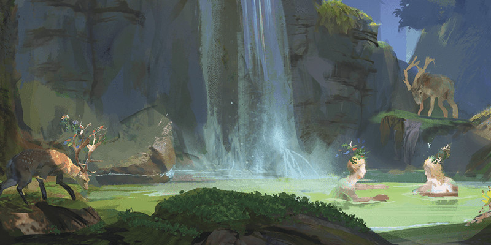

Peuples de la Féerie
Ce document présente quatre nouvelles options de race pour les personnages joueurs :
Créer votre personnage
NOTE DE CONCEPTION
La section « Créer votre personnage » fournit des règles spéciales pour la création de personnage avec les options de race de cet article. Toutefois, les races qui utilisent ces règles peuvent coexister avec les races qui utilisent d'autres règles. Par exemple, les options de race du Manuel des joueurs ont des augmentations de caractéristiques définies, contrairement aux races de cet article, mais les races de ces deux sources peuvent partir à l'aventure ensemble.
Si vous souhaitez qu'une race qui n'apparaît pas dans cet article, comme un elfe ou un nain, ait une flexibilité similaire pour ses caractéristiques, le livre Tasha's Cauldron of Everything fournit une règle, appelée Personnalisation de votre origine, qui donne cette souplesse. Ce livre donne également la possibilité de créer votre propre race, au lieu de choisir une race existante. Cette option s'appelle la Lignée personnalisée. Quelle que soit l'option que vous choisissez pour votre personnage (une race de cet article, une race du Manuel des joueurs, une race modifiée par la règle Personnalisation de votre origine ou une Lignée personnalisée), vous pouvez partir à l'aventure avec des personnages construits de manière différente.
Cet encart s'appuie sur la Note de conception des Lignées gothiques.
Lorsque vous créez votre personnage, vous décidez s'il appartient à la race humaine ou à l'une des races fantastiques du jeu. Si vous créez un personnage en utilisant une option de race présentée ici, suivez ces règles supplémentaires lors de la création du personnage.
Augmentation de caractéristiques
Lorsque vous déterminez vos valeurs de caractéristiques, augmentez une de ces valeurs de 2 et augmentez-en une autre de 1. Suivez cette règle quelle que soit la méthode que vous utilisez pour déterminer les caractéristiques (lancers de dés ou achat par points). La section Création rapide de la classe de votre personnage propose des suggestions pour les valeurs à augmenter. Vous êtes libre de suivre ces suggestions ou de les ignorer. Quelles que soient les valeurs que vous décidez d'augmenter, aucune ne peut être au-dessus de 20.
Langues
Votre personnage peut parler, lire et écrire le commun et une autre langue que vous et votre MD reconnaissez comme appropriée pour le personnage. Le Manuel des Joueurs propose une liste de langues répandues parmi lesquelles choisir. Le MD est libre d'ajouter ou de supprimer des langues de cette liste pour une campagne particulière.
Type de créature
Chaque créature de D&D, y compris chaque personnage joueur, a une entrée spéciale dans les règles qui identifie son type de créature. La plupart des personnages joueurs sont de type humanoïde. Les options présentées ici indiquent de quel type de créature est votre personnage.
Voici une liste des types de créatures du jeu par ordre alphabétique : aberration, artificiel, bête, céleste, dragon, élémentaire, fée, fiélon, géant, humanoïde, monstruosité, mort-vivant, plante, vase. Ces types n'ont pas de règles spécifiques liées, mais certaines règles du jeu affectent les créatures de certains types de différentes manières. Par exemple, la description du sort soins spécifie que le sort ne fonctionne pas sur une créature de type créature artificielle.
Fée
La Féerie abrite de nombreux peuples fantastiques, dont les fées. Il s'agit d'un petit peuple, mais pas autant que leurs amis lutins et farfadets. Imprégnées de la magie de la Féerie, les fées ont quelques points communs entre eux, mais peuvent être très différents en termes d'apparence, de comportement et d'attitude. De nombreux êtres féeriques ont une particularité physique qui les distingue de leurs semblables. Pour choisir cette particularité, lancez un dé sur la table suivante ou bien choisissez directement. La Féerie est un endroit sauvage, alors inventez votre propre particularité physique si aucune ne correspond à votre personnage.
| d8 | Caractéristique |
|---|---|
| 1 | Vous avez de petites ailes comme celles d'un insecte. |
| 2 | Vous avez une peau chatoyante et multicolore. |
| 3 | Vous avez des oreilles exceptionnellement grandes. |
| 4 | Une aura constante et scintillante vous entoure. |
| 5 | Vous avez une petite corne spectrale sur le front semblable à une petite corne de licorne. |
| 6 | Vos mains ne sont jamais sales. |
| 7 | Vous sentez les brownies frais. |
| 8 | Un froid inoffensif et perceptible vous entoure. |
Traits
Vous avez les traits raciaux suivants.
Type de créature. Vous êtes une fée.
Taille. Votre taille est Petite (P).
Vitesse. Votre vitesse de base est de 9 mètres.
Vol féerique. Vous avez une vitesse de vol égale à votre vitesse de base et vous pouvez faire du vol stationnaire. Ce vol est magique et ne nécessite pas l'utilisation de vos ailes (si vous en avez bien sûr).
Magie des fées. Vous connaissez les sorts druidisme et lueurs féeriques. Vous pouvez lancer lueurs féeriques sans dépenser un emplacement de sort, et vous devez terminer un repos long avant de pouvoir le lancer à nouveau de cette façon. Vous pouvez également lancer ce sort en utilisant n'importe quel emplacements de sort dont vous disposez. Votre caractéristique d'incantation pour ces sorts est au choix l'Intelligence, la Sagesse ou le Charisme.
Passage féerique. Vous pouvez vous faufiler dans un trou de seulement 3 cm de large.
Hobgobelin de Féerie
Les hobgobelins trouvent leurs origines dans la Féerie, où ils sont apparus avec leurs cousins gobelins et gobelours. Cette origine a laissé des traces. En effet, bien que les hobgobelins se sont répandus sur tout le plan matériel, ils continuent de transmettre un aspect de la règle de réciprocité, règle venant de la Féerie, qui consiste à créer un lien mystique entre celui qui offre et celui qui reçoit un cadeau. Sur certains mondes, de tels liens conduisent les hobgobelins à former des communautés dont les membres sont profondément liés les uns aux autres. Dans les Royaumes Oubliés, de vastes légions d'hobgobelins ont vu le jour, composées d'innombrables soldats dévoués et remarquables par leur efficacité à combattre en tant qu'unité. Les hobgobelins sont généralement plus grands que leurs cousins gobelins mais pas tout à fait aussi grands que les gobelours. Ils ont des oreilles courbées et pointues, et un nez qui devient rouge ou bleu lorsqu'ils manifestent des émotions.
Traits
Vous avez les traits raciaux suivants.
Type de créature. Vous êtes un humanoïde.
Taille. Votre taille est Moyenne (M).
Vitesse. Votre vitesse de base est de 9 mètres.
Vision dans le noir. Vous pouvez voir à 18 mètres dans une lumière faible comme vous verriez avec une lumière vive, et dans le noir comme vous verriez avec une lumière faible. Dans les ténèbres, vous ne discernez pas les couleurs, uniquement des nuances de gris.
Ascendance féerique. Vous avez un avantage aux jets de sauvegarde que vous effectuez pour éviter ou mettre fin à l'état charmé qui vous afflige.
Don féerique. Vous pouvez utiliser ce trait pour effectuer l'action Aider comme une action bonus, et vous pouvez le faire un nombre de fois égal à votre bonus de maîtrise. Vous récupérez toutes les utilisations dépensées lorsque vous terminez un repos long. À partir du niveau 3, choisissez l'une des options ci-dessous chaque fois que vous effectuez l'action Aider, que ce soit comme action bonus ou comme action :
Hospitalité. Vous et la cible de votre action Aider gagnez chacun un nombre de points de vie temporaires égal à 1d6 plus votre bonus de maîtrise.
Cheminement. Vous et la cible de votre action Aider augmentez chacun votre vitesse de base de 3 mètres jusqu'au début de votre prochain tour.
Espionnage. Jusqu'au début de votre prochain tour, la première fois que vous ou la cible de votre action Aider touchez une créature avec un jet d'attaque, cette créature a un désavantage sur son prochain jet d'attaque effectué dans la minute suivante.
La chance du plus grand nombre. Si vous ratez un jet d'attaque ou échouez à un jet de caractéristique ou à un jet de sauvegarde, vous pouvez faire appel à vos liens de réciprocité pour obtenir un bonus au jet égal au nombre d'alliés que vous pouvez voir dans un rayon de 9 mètre (maximum +5). Vous pouvez utiliser ce trait un nombre de fois égal à votre bonus de maîtrise, et vous récupérez toutes les utilisations dépensées à la fin d'un repos long.
Hiboulin
Distants cousins des hiboux géants, les hiboulins, ou homme-hibou, prennent diverses formes qui peuvent varier de la petite boule de duvet à la majestueuse créature aux ailes d'une envergure imposante. Les hiboulins disposent de bras et de jambes comme les autres humanoïdes. Ils sont également dotés d'ailes qui s'étendent depuis le haut de leur dos. Comme ils ont un lien ancestral avec la Féerie, les hiboulins peuvent percevoir, de manière innée, la magie qui les entoure. Comme les hiboux, les hiboulins portent des plumes qui demeurent silencieuses lorsqu'ils se déplacent, au sol comme en vol, ce qui leur permet de se faufiler pour surprendre quelqu'un. Votre personnage hiboulin pourrait être nocturne ou simplement préférer se lever tard, incarnant ainsi l'expression commune « oiseau de nuit ».
Traits
Vous avez les traits raciaux suivants.
Type de créature. Vous êtes un humanoïde.
Taille. Votre taille est Moyenne (M) ou Petite (P). Vous choisissez cette taille à la création.
Vitesse. Votre vitesse de base est de 9 mètres.
Vision dans le noir. Vous pouvez voir à 27 mètres dans une lumière faible comme vous verriez avec une lumière vive, et dans les ténèbres comme vous verriez avec une lumière faible. Dans les ténèbres, vous ne discernez pas les couleurs, uniquement des nuances de gris.
Perception de la magie. Vos sens aiguisés se concentrent pour voir la présence de magie. Vous obtenez la capacité de lancer le sort détection de la magie, mais seulement en rituel. Votre caractéristique d'incantation pour ces sorts est au choix l'Intelligence, la Sagesse ou le Charisme. Vous pouvez également lancer ce sort si vous disposez d'un emplacement de sort.
Vol agile. Grâce à vos ailes, vous êtes doté d'une vitesse de vol égale à votre vitesse de base. Lorsque vous tombez, vous pouvez utiliser votre réaction pour tenter un jet de sauvegarde de Dextérité (DD 10). En cas de réussite, vous cessez de tomber et vous volez sur place jusqu'au début de votre prochain tour.
Plumage silencieux. Vous maîtrisez la compétence Discrétion.
Homme-lapin
Traversant les étendues sauvages, l'homme-lapin de la Féerie incarne un esprit de liberté et de voyage. Les homme-lapins sont bipèdes, avec les pieds longs caractéristiques de l'animal, comme leurs variétés de teintes de fourrure. Ils partagent les sens aigus et les jambes puissantes des léporidés et sont pleins d'énergie, tels des ressorts. Les homme-lapins bénéficient d'un peu de la chance des fées, et ils se trouvent souvent par quelques Pas chanceux hors des dangers lors de leurs aventures.
Traits
Vous avez les traits raciaux suivants.
Type de créature. Vous êtes un humanoïde.
Taille. Votre taille est Moyenne (M) ou Petite (P). Vous choisissez cette taille à la création.
Vitesse. Votre vitesse de base est de 9 mètres.
Démarrage du lièvre. Vous ajoutez votre bonus de maîtrise à votre dé d'initiative.
Sens léporidés. Vous gagnez la maîtrise de la compétence perception.
Pas chanceux. Quand vous ratez un jet de sauvegarde de Dextérité, vous pouvez utiliser votre réaction pour lancer 1d4 et l'ajouter au résultat, pour potentiellement transformer l'échec en succès.
Saut de lapin. Une fois par tour, quand vous marchez d'au moins 1,50 m, vous pouvez sauter. Lancez 1d4 et déplacez-vous d'autant de mètres dans la direction de votre choix (ou 1d3 cases). Cette distance supplémentaire ne coûte pas de mouvement, mais vous pouvez sauter seulement si votre vitesse n'est pas nulle.

Traduction par blueace, Jpp, Puncho et Leif